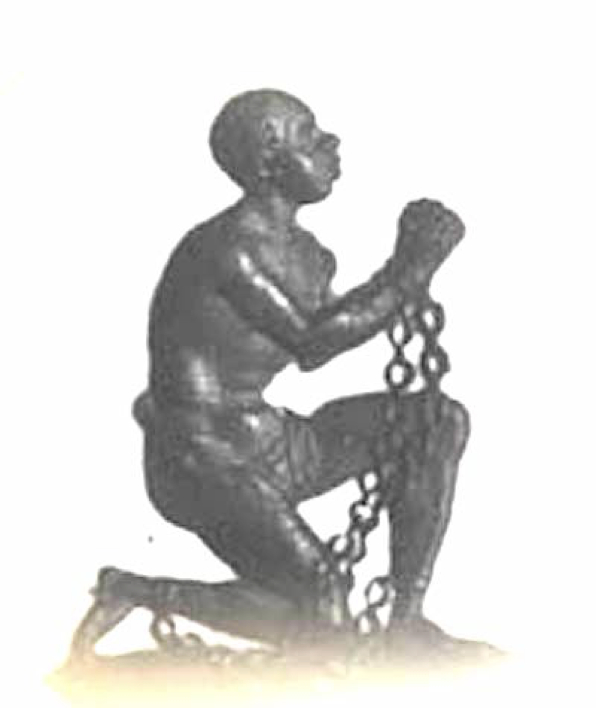

-1-MasterItem.svg)
Stories of Westminster United Church & its People / Page
115
some trepidation. But I made the introduction and I paused. In seconds a voice
familiar to many in
the congregation came through those loud speakers and Dr, MacKinnon in Halifax
preached to us in
Winnipeg.
When he had finished I thanked him and introduced Dr. Christie. In a matter of
seconds the voice of
Dr. Christie came through from Victoria, B.C.
For Westminster Church it was a momentous occasion. If my memory is right, I
paid $85 for that 20
minutes. Such a service had never been conducted in Canada before.”
Ernest Marshall Howse: The Writer
People who attend university to earn a Bachelor of (you-name-it) degree but
who go no further ( Masters degree, Doctorate degree) are spared the pain of
fulfilling the requirement for each of these latter degrees- a Thesis. The
Thesis
can sometime be an arduous work extending over several years.
Howse entered his doctoral program in 1932. It was two years later, 1934 that
he completed his thesis, a work of nearly of 298 pages (including the
appendices) He was a hard worker and a fiercely focus student.
His Thesis on the Clapham Sect earned him a Doctor of Philosophy Degree
at University of Edinburgh in October 1934. It is a long read of a particular
group of people in the Church of England in the 18th century who abhorred
slavery in the British
Empire. William Wilberforce was their leader and an Act of Parliament was their
goal.
Those interested in the Sect and Howse’s story can review this PDF (~11 Mb).
Rev. Ernest Marshall Howse
